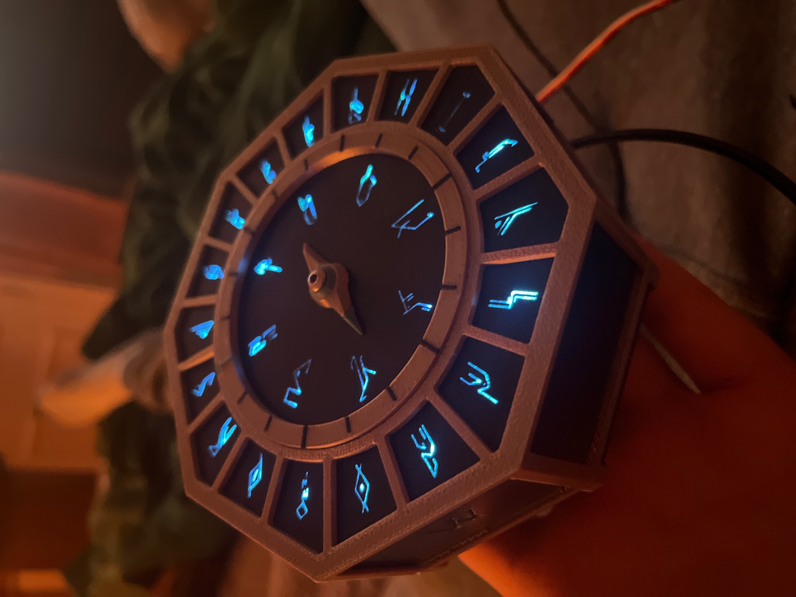
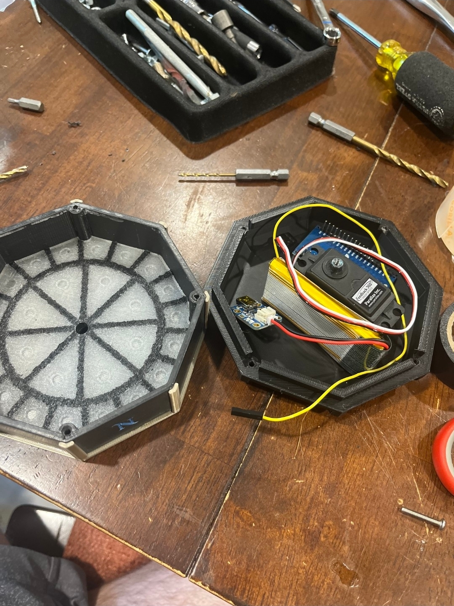
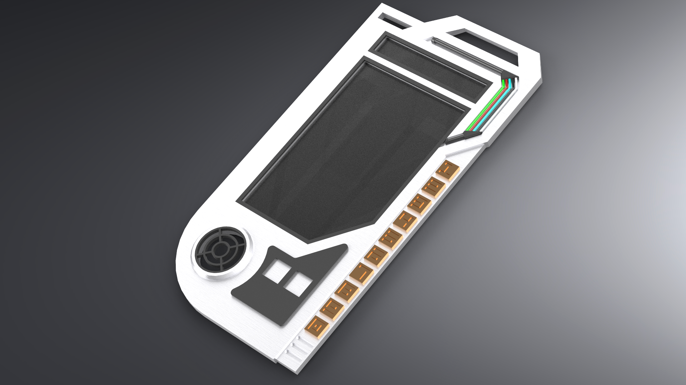

Projects
2D Fantasy Platformer Team Project
UNT LARC Engine - C++
- Engine-level rendering and pipeline modifications
- Custom 3D sprite batching and depth sorting
- LDtk-driven levels with Box2D physics integration
- Multi-character platformer gameplay systems


Wireless DM-Controlled Magic Compass
ESP32 - C++ - Web Server - Servo Control
- Built a wireless prop device for tabletop RPG gameplay
- Embedded web server allows DM to send real-time direction updates
- ESP32-controlled servo physically rotates compass needle
- Integrated LEDs and custom enclosure for immersive feedback


Wireless DM-Controlled Datapad
Raspberry Pi - Python - Custom GUI - Web Server - File I/O
- Designed and implemented a custom touchscreen GUI inspired by Star Wars interfaces
- Built a local web server allowing a game master to send, view, and delete messages remotely
- Implemented message storage and file management on-device
- Developed as a live-use prop for a tabletop RPG campaign
2D Metroidvania Spellslinger
GameMaker - GML
- Metroidvania with rune-based spell casting
- Directional input system inspired by Helldivers
- Souls-inspired shield and resource mechanics
- Custom UI, lighting, and animations